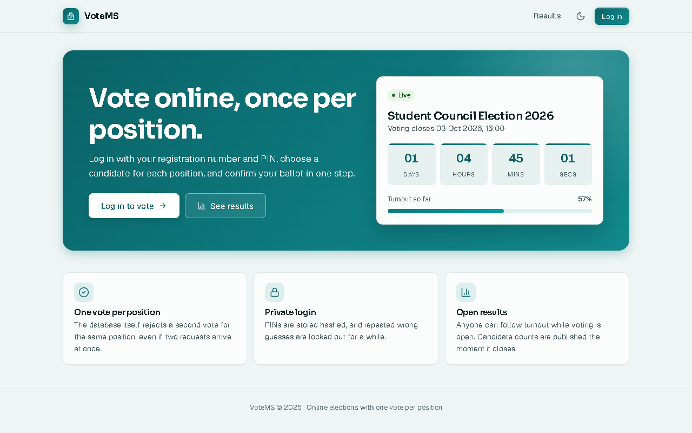
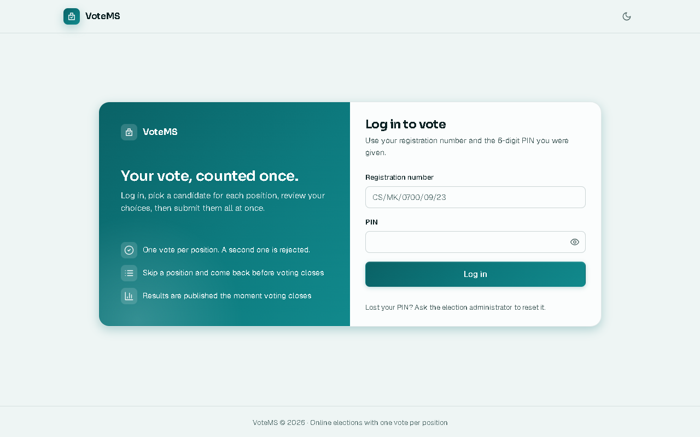
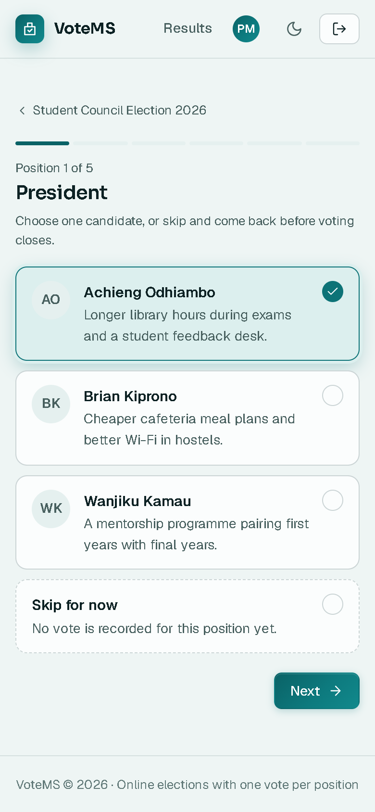
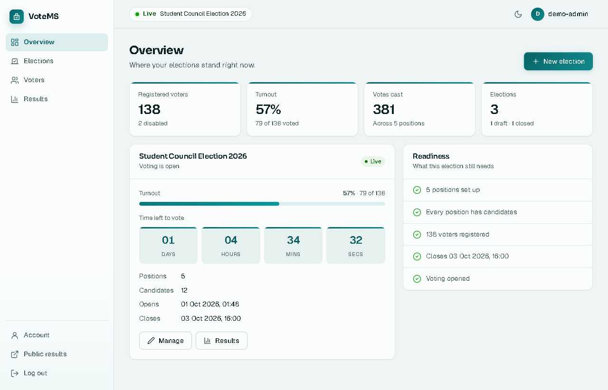
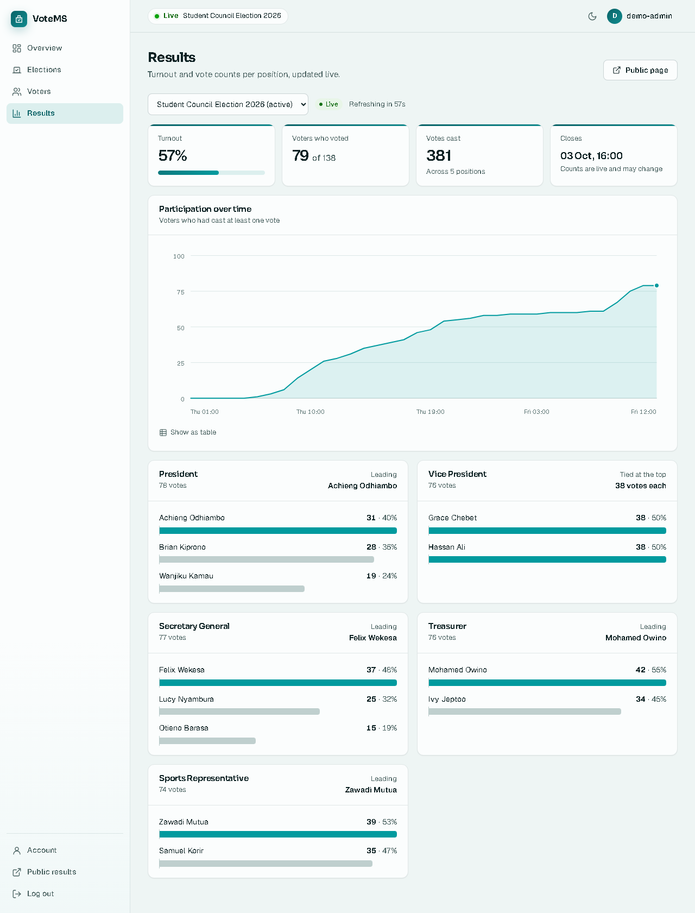

// Case study
Voting System
An online election system in plain PHP. Voters log in with their registration number and a PIN, vote one position at a time, and see results the moment voting closes.
Admin demo-admin / demo-admin-pass · Voter CS/MK/0001/09/23, PIN 246810. Demo accounts can see everything but don't save changes.

Quick facts
// The problem
Only registered voters, one vote per position
An election system has to hold two rules at once: only registered voters can vote, and nobody votes twice for the same position. It also has to stay simple enough for an admin to run without technical help, and fair enough that a running count can't sway the people still voting.
// How it works
From login to results
One login page
Voters sign in with the registration number they already know and a 6-digit PIN. Case and spaces don't matter, so small typing slips still work.
Admins use the same page with a username and password. The app works out which kind of account it is, and it never lets a registration number and an admin username be the same.

A ballot one position at a time
Each position is its own step, with a progress bar along the top. Voters can skip a position and come back to it, then check the whole ballot on a review screen before submitting.
The ballot is saved in a single transaction, so it either goes in complete or not at all. It's built to work on a phone first.

An admin dashboard
Admins create elections, add positions and candidates, and import voters in bulk by pasting registration numbers and names straight from Excel. Mistakes are reported line by line before anything is saved, and new PINs are shown once with a CSV download.
A readiness checklist shows what an election still needs. An election can't open while any position has no candidates, and once the first vote is in, the ballot is locked.

Results that can't sway the vote
Admins follow the counts live, with the leader of each position highlighted. The public results page shows only turnout while voting is open. Candidate counts aren't even sent to the browser until voting closes.
Charts include a turnout meter, participation over time (which can also be shown as a table) and a bar chart per position. The whole app has a light and a dark theme.

// Security
Built with the basics covered
Logins
PINs and passwords are stored hashed. Five failed attempts lock an ID for 15 minutes, unknown IDs take as long to check as real ones, and the session is regenerated on login.
Requests
CSRF tokens on every form, prepared PDO statements for every query, and a voter's active status re-checked on every request so access can be cut off at once.
Votes
The database itself rejects a second vote for the same position, even if two requests arrive at once. Whole ballots are saved in one transaction.
// What's next
What I'd do next
What it would still need before running a real election.
Anonymous ballots
Right now each vote is stored with the voter's ID, so anyone with database access can see who voted for whom. I'd record that someone voted separately from what they voted, so the two can't be linked.
Hosting for a real election
The demo runs on free hosting, which is fine for trying it out. A real election would need paid hosting with its own domain and regular database backups.